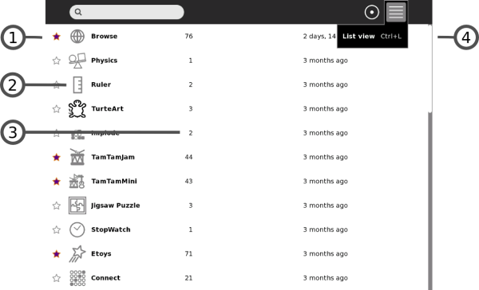
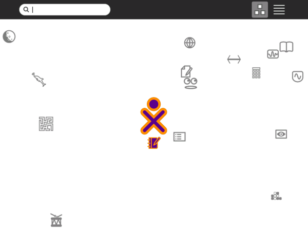
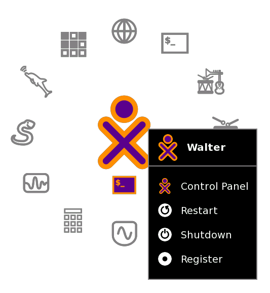

| Vue de Groupe | Index | Vue d'Activité |
Utilisez la Vue Accueil pour commencer de nouvelles Activités.
Note: Lorsque vous aurez cliqué sur l'icône Activités, attendez que l'Activité démarre. Si vous êtes impatient et que vous cliquez à nouveau sur l'icône Activités, vous ferez démarrer la même Activité deux fois.
Lorsque vous cliquez sur l'icône Activités, une vue de démarrage est affichée tandis que l'Activité s'initialise. Une fois que l'Activité est lancée, elle vous amène dans sa Vue d'Activité. Si l'Activité n'arrive pas à démarrer, elle vous ramène alors à la Vue Accueil.
Pour vous rendre à la Vue Accueil, cliquez sur l'icône Accueil dans le cadre ou appuyez sur la touche F3.
La Vue Accueil possède différents modes. Chaque mode propose une disposition différente des Activités:
1. Boîte de recherche
Utilisez la boîte de recherche pour trouver des Activités.
Note: Si, dans la vue Liste, vous voyez moins d'Activités que vous le pensez, cliquez alors sur le petit x en bas à droite de la boîte de recherche afin d'arrêter une demande de recherche fortuite.
2. Modes d'affichage
Cliquez sur une icône pour passer à une Vue différente. Glissez sur l'icône Favoris pour faire apparaître le menu qui vous permettra de choisir le mode Anneau ou le mode Libre.
3. Icône Activité
Cliquez sur une icône Activité pour lancer cette Activité (ce qui la fait apparaître dans le cadre). Seules les Activités choisies comme favorites apparaîssent dans cette vue (Reportez-vous à la Vue de Liste ci-dessous pour plus de détails).
4. Icône XO
Glissez le pointeur sur le "XO" au centre de la Vue Accueil afin de faire apparaître le menu et d'accéder au panneau de contrôle Sugar (Reportez-vous au chapitre "Personnaliser Sugar").
5. Icône Activité en cours
L'icône de l'Activité en cours apparaît sous l'icône XO.
Utilisez la Vue de Liste pour contrôler toutes vos Activités ainsi que pour choisir quelles icônes d'Activités apparaîtront dans la Vue Activités favorites.

1. Entrée d'Activité
Chaque entrée de la liste possède :
2. Icône
Cliquez sur son icône pour lancer l'Activité. Attention: En cliquant "effacer" dans l'icône du menu déroulant, vous pouvez désinstaller cette Activité de votre système.
3. Numéro de version
Elle vous permet de comparer votre version à celles qui sont disponibles dans une liste telle que http://wiki.laptop.org/go/Activities, afin de vérifier que votre version est à jour.
4. Barre de déroulement
La liste d'Activités peut être allongée au-dela de l'écran. Utilisez cette barre pour vous déplacer le long de la liste.
Le mode Libre de la Vue Accueil fonctionne de la même façon que le mode Anneau, mais les icônes sont disposés arbitrairement au lieu d'être en rond. Vous pouvez déplacer des icônes dans cette Vue afin de les regrouper visuellement d'une manière qui a du sens pour vous.

Utilisez le menu déroulant qui apparaît en-dessous de l'icône XO afin d'accéder au panneau de contrôle Sugar ainsi que pour éteindre ou redémarrer votre ordinateur.

| Vue de Groupe | Index | Vue d'Activité |